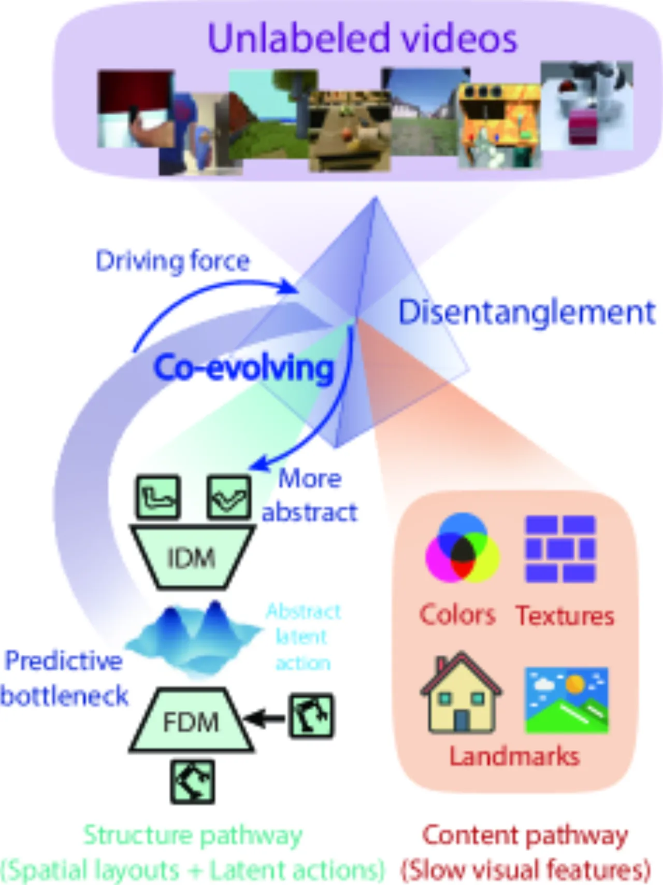
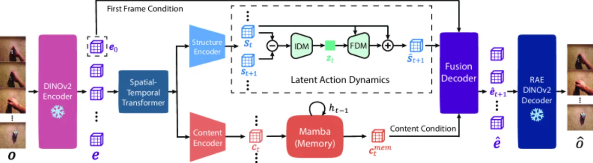
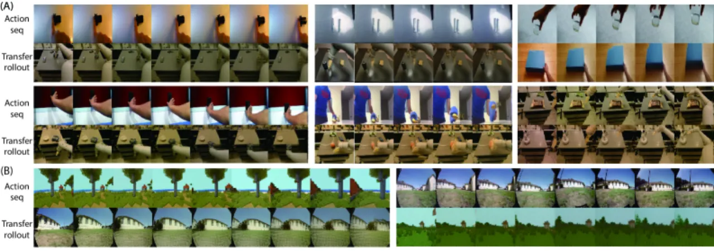
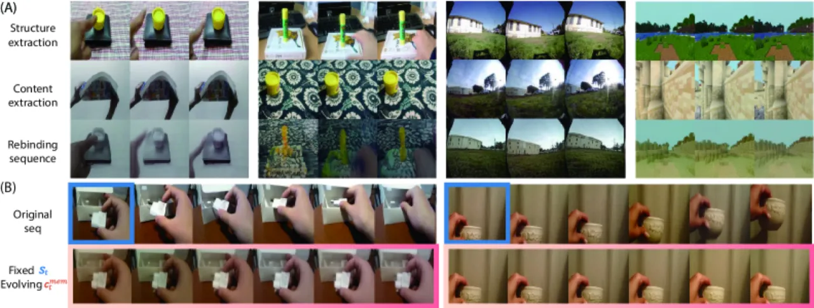
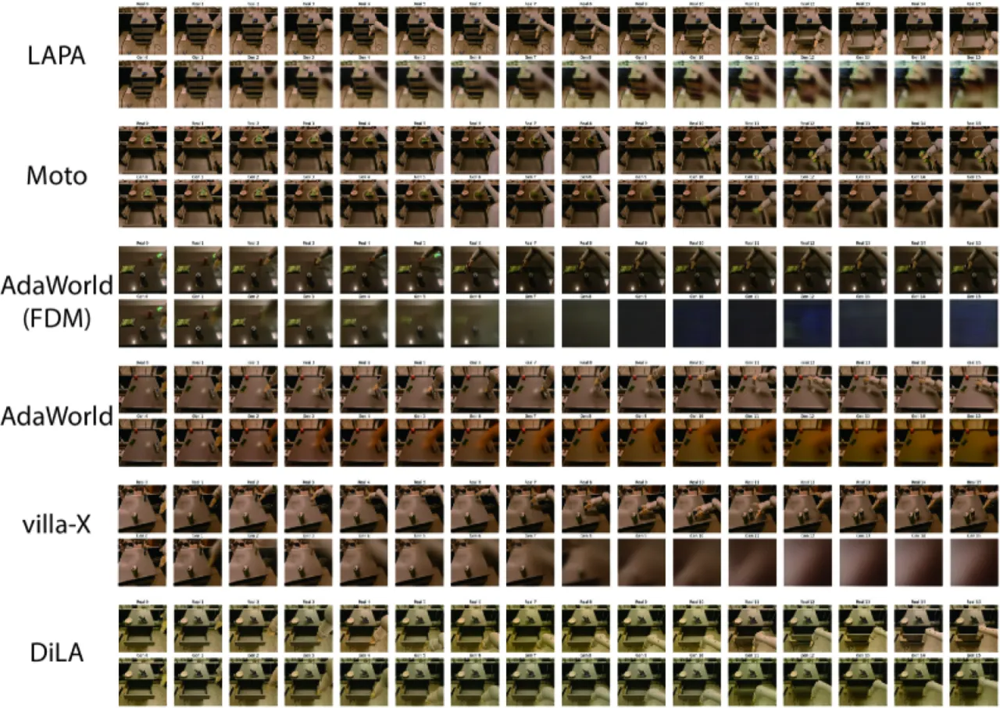

Latent Action Models (LAMs) 面临"动作抽象"与"生成保真度"之间的根本性权衡。DiLA 通过将视频帧分解为结构（structure）通道和内容（content）通道，让潜在动作编码空间布局（运动信息），内容记忆保留视觉细节，从而在不牺牲生成质量的前提下学到连续且语义结构化的潜在动作空间。
Latent Action Models (LAMs) 是一类以无监督方式从视频中提取潜在动作表示的世界模型。然而，已有方法在动作抽象和生成保真度之间存在难以调和的权衡：通过 Vector Quantization 或 VAE 强化瓶颈可以提升动作抽象质量，却以牺牲视频帧的视觉细节为代价；而保留视觉细节又会导致结构化动作表示退化。
"The predictive bottleneck inherent in latent action learning serves as a driving force for disentanglement."
作者将这一现象称为 "LAM Trade-off"，并提出核心洞察：仅需预测帧间差异的结构变化即可完成视频预测，这天然驱动了内容与结构的解耦。通过显式地将两条路径分离——结构通道（dynamics）和内容通道（appearance）——DiLA 绕开了这一权衡。

DiLA 由三个核心模块组成：结构通道（Structure Pathway）提取并预测帧间的空间布局变化；内容通道（Content Pathway）通过 Mamba-based memory 聚合静态视觉特征；Fusion Decoder 将两路信息融合重建目标帧。整个系统无需任何动作标注，以自监督 teacher-forcing 方式端到端训练。

视频帧经过编码后被压缩为结构嵌入 s，只保留空间布局信息。Inverse Dynamics Model (IDM) 接受相邻两帧的结构嵌入，提取潜在动作 z（维度 dz=256，连续表示）；Forward Dynamics Model (FDM) 则将当前结构嵌入与潜在动作结合，通过残差更新预测下一帧的结构嵌入。训练目标包含视觉潜在预测损失 ℒe（λ=2.0）、结构预测损失 ℒs（λ=0.03）、潜在动作一致性损失 ℒz（λ=0.03）以及含 inverse-temporal symmetry 的正则化损失 ℒreg（λ=0.001）。
内容通道的设计目的是隔离静态视觉外观，不引入运动信息。Mamba-based memory 模块在时间维度上聚合来自多帧的静态特征，输出内容记忆向量 cmem。消融实验验证：冻结结构嵌入后，重建序列静止不动，确认内容通道中零运动泄漏（zero motion leakage）。
跨场景/跨实体动作迁移通过 DINOv2 特征对齐实现：将源视频提取的结构变化（潜在动作序列）应用于目标初始帧，无需任何微调。这支持了 human→robot、跨视角、跨导航环境等多种 cross-embodiment 迁移场景。

实验在 Something-Something v2 (SSv2)、RT-1 机器人操作、OmniObject3D、RECON/LoopNav 导航等多个数据集上展开，与 LAPA、Moto、AdaWorld、villa-x 等强基线对比，评估视频生成质量（SSIM↑、LPIPS↓）、动作解码能力（Linear Probing MSE↓）以及视觉规划成功率。
| 模型 | SSv2 SSIM↑ | SSv2 LPIPS↓ | RT-1 SSIM↑ | RT-1 LPIPS↓ |
|---|---|---|---|---|
| LAPA | 0.637±0.035 | 0.565±0.021 | 0.491±0.014 | 0.595±0.005 |
| Moto | 0.555±0.043 | 0.593±0.022 | 0.762±0.023 | 0.284±0.016 |
| AdaWorld(FDM) | 0.625±0.029 | 0.576±0.016 | 0.554±0.014 | 0.549±0.012 |
| AdaWorld | 0.674±0.008 | 0.521±0.022 | 0.634±0.013 | 0.429±0.009 |
| villa-x | 0.636±0.036 | 0.515±0.026 | 0.576±0.023 | 0.477±0.021 |
| DiLA w/o content | 0.594±0.050 | 0.450±0.031 | 0.647±0.022 | 0.258±0.015 |
| DiLA | 0.660±0.037 | 0.356±0.027 | 0.774±0.010 | 0.206±0.013 |
DiLA 在感知质量指标 LPIPS 上全面领先（两数据集均最优），RT-1 SSIM 也达到最优。SSv2 SSIM 略低于 AdaWorld（0.660 vs. 0.674），但 SSv2 LPIPS 显著优于所有基线（0.356 vs. 0.515+）。

| 模型变体 | Rollouts↓ | Cycle Transfer↓ | MSE↓ |
|---|---|---|---|
| DiLA w/o content | 0.344±0.030 | 0.451±0.018 | 0.249±0.035 |
| Discrete z | 0.334±0.020 | 0.442±0.028 | 0.262±0.033 |
| Gaussian z | 0.346±0.019 | 0.434±0.018 | 0.265±0.024 |
| DiLA | 0.263±0.027 | 0.343±0.022 | 0.216±0.031 |
连续潜在动作表示显著优于离散（Vector Quantization）和高斯变分形式。内容通道对于改善动作迁移质量不可或缺（w/o content 在所有指标上均显著下降）。
| 方法 | Franka Kitchen↓ | Block Pushing↓ | Push-T↓ | LIBERO Goal↓ |
|---|---|---|---|---|
| Discrete z | 0.098±0.014 | 0.061±0.015 | 0.023±0.004 | 0.160±0.023 |
| Gaussian z | 0.125±0.020 | 0.102±0.023 | 0.041±0.006 | 0.190±0.022 |
| DiLA | 0.073±0.014 | 0.037±0.013 | 0.009±0.003 | 0.119±0.018 |

| 任务 | AdaWorld | DiLA |
|---|---|---|
| Robosuite push | 63.50±1.71% | 68.00±1.41% |
| Open slide | 5.83±2.85% | 15.00±5.00% |
| Blue button | 29.17±2.50% | 78.33±3.73% |
| Green button | 10.83±2.50% | 35.83±4.93% |
| Red button | 10.00±2.36% | 20.83±5.95% |
| Upright block | 5.00±0.96% | 3.33±2.72% |
| 聚合成功率 | 21.54 | 41.44 |
在 Model Predictive Control 视觉规划基准 VP² 上，DiLA 聚合成功率 41.44% 远超 AdaWorld 的 21.54%，在 5/6 个子任务上占优。仅 Upright block 任务（精细控制）AdaWorld 略胜（5.00% vs. 3.33%），与作者分析的局限性一致。
潜在动作的高级抽象特性牺牲了控制精度，导致在要求精细操作的任务（如 VP² 中的 Upright block）上表现不稳定。抽象层面越高，对底层执行器的精确控制越难保证。
当前框架将空间布局（结构）与外观（内容）分离，但不支持对多个物体的独立分解建模。场景中存在多个独立运动物体时，模型的解耦能力受限。
以自回归方式逐帧预测时，预测误差会随时间步增加而累积（compounding errors），导致长时序视频生成质量下降。